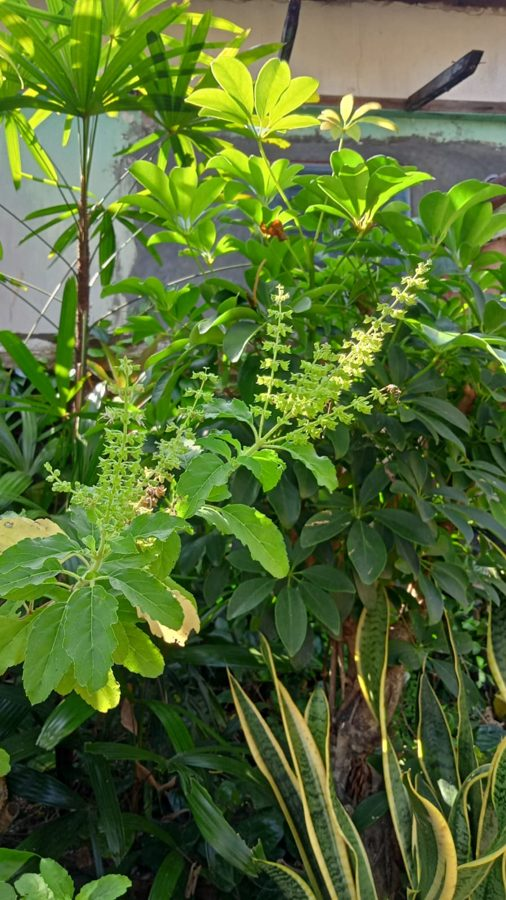

तुलसीHoly Basil
Ocimum tenuiflorum · Lamiaceae · FLR-0008

- Scientific name
- Ocimum tenuiflorum L.
- Family
- Lamiaceae
- Hindi
- तुलसी / पवित्र तुलसी
- Status here
- native
- IUCN
- not evaluated
When to look कब देखें
Present all year.
तुलसी / Tulsi
Ocimum tenuiflorum L. — Lamiaceae
तुलसी — पूर्वी उत्तर प्रदेश के लगभग हर हिंदू घर के आँगन में "तुलसी चौरा" पर विराजने वाला परम पवित्र पौधा। प्रतिदिन श्रद्धापूर्वक सींची जाने वाली, संध्या समय दीप जलाकर परिक्रमा की जाने वाली, और कार्तिक मास में शालिग्राम रूपी विष्णु के साथ ब्याही जाने वाली तुलसी भारतीय संस्कृति का प्राण है। आधुनिक चिकित्सा विज्ञान भी इसके रोग-प्रतिरोधक और तनाव-निवारक गुणों को पूर्णतः स्वीकार करता है — इसकी अनूठी सुगंध और औषधीय प्रभाव के पीछे एक अत्यंत समृद्ध जैव-रसायन विज्ञान है।
Quick Identification त्वरित पहचान
| Feature | Description |
|---|---|
| Size & Habit | Small, highly branched aromatic perennial herb or sub-shrub, 30–75 cm tall |
| Stem | Distinctly square in cross-section, purple or green, covered in fine protective hairs |
| Leaves | Opposite, simple, ovate-elliptic (2–5 cm long) with slightly toothed margins; strongly aromatic |
| Varieties | Green-leaved Ram Tulsi (milder) and purple-leaved/stemmed Krishna Tulsi (stronger, more pungent) |
| Flowers | Small (4–6 mm), tubular, two-lipped; white to purple-pink, borne in tiered whorls along terminal spikes |
| Cultivation | Overwhelmingly grown as a domestic potted plant or on dedicated brick platforms in courtyards |
Field tip: Any small, highly aromatic, square-stemmed courtyard herb with a strong, warm, clove-like fragrance upon crushing its leaves is Holy Tulsi. Look for the distinctive tiered flowering spikes with small purple or white tubular blossoms.
Morphology आकारिकी
Biometrics (typical measurements in the Gangetic plain):
| Feature | Measurement |
|---|---|
| Plant height | 30–75 cm |
| Leaf length | 2–5 cm |
| Leaf width | 1–3 cm |
| Flower length | 4–6 mm |
| Seed size (nutlet) | ~1 mm |
- Habit: Erect to semi-erect aromatic herb / soft sub-shrub, 30–75 cm (occasionally 1 m) tall
- Stem: Square in cross-section (a Lamiaceae family character — share with mint, sage, lavender). Lower stem becomes woody with age; upper branches herbaceous. Stems hairy. Green in Ram Tulsi, purple-tinged in Krishna Tulsi.
- Leaves: Opposite, ovate to elliptic, 2–5 cm long, 1–3 cm wide. Margins serrated. Surface covered in fine hairs. Strongly aromatic when crushed. Petioles short (5–15 mm).
- Inflorescence: Terminal racemes 10–20 cm long. Flowers borne in whorls (verticillasters) around the stem at intervals, giving the spike a tiered appearance.
- Flower: Small (4–6 mm), tubular, two-lipped (zygomorphic) typical of Lamiaceae. Colour ranges from white through pink to purple depending on variety.
- Fruit: Four small dry nutlets (mericarps) — each ~1 mm, dark brown to black, smooth — embedded in the persistent calyx.
- Roots: Taproot with extensive lateral roots; tolerates pot cultivation well
Two recognised varieties
| Variety | Leaves | Aroma | Cultural association |
|---|---|---|---|
| Ram Tulsi (राम तुलसी) | Green | Mild, sweet | Associated with calmness, devotional |
| Krishna Tulsi / Shyam Tulsi (कृष्ण तुलसी) | Purple-tinged | Strong, pungent | Associated with stronger medicinal use |
Both are Ocimum tenuiflorum — varieties, not separate species. A third type, Vana Tulsi (वन तुलसी, wild basil), is sometimes called tulsi but is a different species — Ocimum gratissimum.
हिंदी: Ram Tulsi and Krishna Tulsi are varieties of the same species. Their medicinal properties are broadly similar. Vana Tulsi is a different species.
Why Tulsi Smells Like Clove — and What That Means तुलसी से लौंग जैसी गंध क्यों आती है
Crush a tulsi leaf and you smell something familiar — clove. That is not a coincidence. The dominant volatile compound in tulsi essential oil is eugenol — the same compound that gives clove its characteristic smell and clove's well-known anaesthetic-antimicrobial properties.
Tulsi essential oil is approximately 70% eugenol (varies by variety and cultivation). It also contains:
- β-caryophyllene — a sesquiterpene with anti-inflammatory activity (interacts with cannabinoid receptor CB2)
- methyl chavicol / estragole — minor variable component
- eugenol methyl ether — minor
The fresh leaf and stem extracts (not just the essential oil) also contain:
- Ursolic acid — triterpene; anti-inflammatory, anti-tumour activity studied
- Rosmarinic acid — phenolic; antioxidant; common across Lamiaceae
- Apigenin, luteolin — flavonoids; antioxidant
- Oleanolic acid — triterpene; immunomodulatory
The clove-like aroma is therefore not just an aesthetic property — it is the surface signal of a chemically rich plant. The molecules behind the smell are also the molecules behind the medicinal action.
This is what people mean when they say "modern science is validating traditional knowledge" — not that every Ayurvedic claim is correct, but that the active principles claimed by traditional users are turning out to be real, characterizable compounds.
हिंदी — लौंग जैसी गंध और उसका मतलब:
तुलसी की पत्ती मसलने पर लौंग जैसी गंध आती है क्योंकि दोनों में एक ही मुख्य रसायन है — eugenol।
तुलसी के तेल में लगभग 70% eugenol होता है।
साथ में ursolic acid, rosmarinic acid, और कई अन्य यौगिक — जो प्रतिरक्षा, सूजन, और संक्रमण पर असर करते हैं।
"तुलसी औषधीय है" — यह सिर्फ़ श्रद्धा नहीं, यह वास्तविक रसायन विज्ञान है।
Ecological Role पारिस्थितिक भूमिका
- Pollinator support: Tulsi flowers produce abundant nectar and pollen accessible to bees and small butterflies. In village contexts where wild flowers are limited, the tulsi pot can be a significant food source for honeybees, native bees, and butterflies.
- Aromatic deterrent: Eugenol and other volatiles act as mild repellents to some mosquitoes and house flies. Tulsi near windows and outdoor seating areas has measurable but modest mosquito-deterrence effect (not a replacement for nets).
- Minor pest: Whitefly and aphid populations on tulsi can be significant in cultivation but rarely affect the plant's persistence.
- Self-seeding: Where allowed to flower and seed, tulsi self-sows and persists across years in courtyards.
- Cultivated, not wild: Tulsi in eastern UP is overwhelmingly a cultivated plant in pots and on तुलसी चौरा. Wild populations exist but are uncommon. The plant's ecological footprint in our region is essentially a domestic-pollinator-and-aroma niche, not a wild-ecosystem niche.
हिंदी: तुलसी के फूलों पर मधुमक्खियाँ और तितलियाँ आती हैं। मच्छरों को थोड़ा दूर रखती है। गाँव में यह जंगली कम — पालतू पौधा अधिक है।
Life Cycle / Phenology जीवन चक्र
- Perennial in eastern UP — survives mild winters; lives 2–3 years before becoming woody and less productive
- Flowering: August–December (monsoon through early winter); flowers continuously over several months
- Seed set: September–January
- Seeds viable for 1–2 years in dry storage; germinate readily in moist warm soil
- Propagation: Seeds (most common); also softwood cuttings
- Pruning: Regular tip-pinching keeps the plant bushy and prevents premature flowering / woody decline. Many household plants are kept this way.
- Annual cycle in pots: A single plant typically lasts 2–3 monsoon seasons; new plants are grown from self-seeded soil under the parent
हिंदी: बहुवर्षीय पौधा — 2-3 साल जीवित। अगस्त-दिसंबर में फूल। बीज से या टहनी से उगाया जाता है। नियमित कटाई से पौधा घना रहता है।
Sacred and Cultural Significance सांस्कृतिक और धार्मिक महत्व
Tulsi is the most ritualized plant in Hindu domestic life. The cultural depth is real — and is one reason this plant has been continuously cultivated for over 3,000 years across the Indian subcontinent.
Daily practice
- Tulsi Chaura (तुलसी चौरा): Raised platform built specifically for the tulsi plant. Located in the courtyard (आँगन) so it is visible from inside the house. Considered the spiritual centre of the home.
- Morning ritual: After bath, the woman of the house (traditionally) waters the tulsi and circumambulates it. Pinching off a leaf for blessing or for prasad is common.
- Evening dīpa (lamp): At sunset, a small oil lamp is lit at the base of the tulsi. This is a daily ritual across millions of homes.
- Tulsi water (तुलसी जल): Used in religious ablutions; placed in the mouth of dying family members; mixed in ritual baths.
Tulsi and Vishnu
- Considered an incarnation / consort of Lakshmi; sacred to Vishnu / Krishna
- Vishnu is said to be reachable through tulsi worship even without idol worship
- Tulsi leaves are essential in Vishnu and Krishna puja — no Vishnu offering is complete without a tulsi leaf
Tulsi Vivah (तुलसी विवाह)
- Annual ceremony on Prabodhini Ekadashi (in Kartik month, October–November)
- The tulsi plant is ceremonially married to a Shaligram stone (Vishnu in symbolic form) or to a small Krishna image
- This festival marks the beginning of the Hindu wedding season — no marriages are performed before Tulsi Vivah
- Symbolic rites include decorating the तुलसी चौरा, garlanding the plant, offering sweets, lighting many lamps
- The festival is enormously important socially and culturally — it sets the calendar for the rest of the year's family rituals
Sanskrit names
- तुलसी (Tulsi) — most common
- सुरसा (Surasa) — Sanskrit; "she with juice / nectar"
- वैष्णवी (Vaishnavi) — "she of Vishnu"
- बहुमंजरी (Bahumanjari) — "she of many flower-clusters"
- अप्रजिता (Aprajita) — "unconquerable"
Tulsi mala
- Beads made from tulsi wood (तुलसी की माला) — used in japa (chanting); considered sacred to Vishnu devotees especially in Vaishnava traditions
- A separate woody offshoot of tulsi cultivation — the harvested woody stems from old plants are used
हिंदी — सांस्कृतिक महत्व:
तुलसी हिन्दू घर का सबसे पवित्र पौधा है। हर सुबह पानी, हर शाम दीपक — यह 3000 साल से चली आ रही परंपरा है।
कार्तिक माह में तुलसी विवाह — शालिग्राम के साथ — के बाद ही शादियों का मौसम शुरू होता है।
तुलसी की माला विष्णु भक्तों के लिए पवित्र है।
Medicinal Use — Traditional and Modern औषधीय उपयोग
Caveat first: Tulsi has a real evidence base for several uses, but it is not a cure-all. Self-medication for serious conditions is dangerous. The information below is descriptive, not prescriptive.
Traditional Ayurvedic uses
| Condition | Preparation | Notes |
|---|---|---|
| Common cold, cough, sore throat | Leaf tea, leaf-ginger-black-pepper-honey decoction (kadha) | Most widespread household use |
| Fever | Leaf decoction | Common for mild fevers |
| Respiratory issues (mild asthma, bronchitis) | Steam inhalation with leaves; chewed leaves | Used as supportive, not primary |
| Skin conditions (acne, fungal) | Leaf paste applied externally | Topical use |
| Mouth ulcers, gum problems | Leaf paste / chewed leaves | Traditional |
| Digestive complaints | Leaf juice with honey | Mild |
| Anxiety, stress | Daily leaf chewing; tea | Adaptogen / rasayana classification |
| Diabetes (supportive) | Leaf juice morning empty stomach | Some clinical evidence |
| Insect bite, itch | Crushed leaf paste applied | Topical |
What modern research shows
Tulsi is one of the most-studied Ayurvedic herbs. Reasonably solid findings (multiple peer-reviewed studies) include:
- Adaptogenic effect — reduces physiological stress response; some clinical evidence for reduced cortisol and improved well-being scores
- Anti-inflammatory — eugenol, ursolic acid, and rosmarinic acid demonstrate anti-inflammatory action in vitro and in animal models; some human evidence for arthritis symptom relief
- Antimicrobial — leaf extracts inhibit several bacterial and fungal pathogens in vitro
- Antidiabetic — moderate evidence for reduced fasting blood glucose; not a replacement for medical management
- Antioxidant — strong in vitro activity; clinical relevance still being studied
- Immunomodulator — affects various immune markers; details still being clarified
What modern research does NOT yet support
- Cancer treatment claims — most studies are in vitro or animal-only; no strong human evidence for treatment
- COVID-19 cure or prevention — despite widespread claims during pandemic, no rigorous evidence
- Universal "immunity booster" framing — vague and not well-defined scientifically
हिंदी — आधुनिक विज्ञान का दृष्टिकोण:
तुलसी पर हज़ारों शोध हुए हैं।
पक्के प्रमाण: तनाव कम करना, सूजन कम करना, कुछ बैक्टीरिया से लड़ना, रक्त शर्करा थोड़ी कम करना।
साक्ष्य कमज़ोर: कैंसर का इलाज, COVID से बचाव, "सर्वव्यापी प्रतिरक्षा वर्धक"।
इसलिए — तुलसी पारंपरिक रूप से उपयोगी है, लेकिन हर बीमारी का इलाज नहीं है।
Agricultural / Human Relevance कृषि और मानव संबंध
Beneficial
- Easy to grow — tolerates pot cultivation, household care, minimal pest pressure
- Renewable — provides leaves for daily use over 2–3 years; replaces from self-sown seeds
- Pollinator support — flowering tulsi feeds urban bees and butterflies
- Mosquito deterrence (mild) — useful near doors and windows
- Daily ritual continuity — cultural backbone of millions of homes
Cultivation notes
- Full sun to partial shade
- Well-drained soil; sandy loam preferred
- Moderate watering; allow surface to dry between waterings (root rot from overwatering is the main mortality cause in pots)
- Pinch flower spikes occasionally to keep plant leafy
- Replant from seed every 2–3 years; old plants become woody and less aromatic
Commercial uses
- Essential oil extraction (eugenol) — small-scale Indian industry
- Herbal tea (tulsi tea is widely sold)
- Capsule supplements (tulsi extract) — substantial international market
- Tulsi mala for religious use
हिंदी: तुलसी को उगाना आसान — गमले में भी अच्छी होती है। 2-3 साल बाद नई लगानी पड़ती है। पूरे साल पत्तियाँ मिलती हैं।
Expected Locally स्थानीय रूप से अपेक्षित
Not a field record. Written from published accounts for eastern Uttar Pradesh. No confirmed local sighting yet — if you have seen it, that is what the atlas needs.
अभी तक स्थानीय पुष्टि नहीं। यह विवरण प्रकाशित स्रोतों से है, किसी अवलोकन से नहीं।
Cultivated in almost every Hindu household in Basti district, predominantly in raised brick planters (Tulsi Chaura) located in central courtyards or near main entrance doorways. Both green (Ram) and purple-tinged (Krishna) forms are grown. The leaves are frequently harvested for home remedies, especially as a tea base during the change of seasons (October–November and March–April) to treat common colds.
Distribution वितरण
Global range: Widespread across South Asia, from the Persian Gulf and Iran through the Indian subcontinent to Southeast Asia.
In India: Found throughout the country, from the foothills of the Himalayas to southern India, excluding only the high-altitude regions.
In Uttar Pradesh: A common and widespread resident across all districts, associated with forests, orchards, agricultural lands, and gardens.
In Basti district / eastern UP: Highly common year-round resident in gardens, village orchards, and scrublands throughout the district.
Range notes: Long cultivated across the plains.
Research Questions शोध प्रश्न
Anyone can investigate these | कोई भी इन प्रश्नों की जाँच कर सकता है
- How many households in your village have a tulsi plant? / आपके गाँव में कितने घरों में तुलसी का पौधा है? — Survey 50 households. Compare Ram Tulsi vs Krishna Tulsi cultivation. Document beliefs around tulsi care.
- What insects visit tulsi flowers in your garden? / आपके बगीचे की तुलसी के फूलों पर कौन-कौन से कीट आते हैं? — Watch a flowering plant for 30 minutes on a sunny morning. Record every visitor. Often a surprising diversity of small bees and butterflies.
- Do mosquitoes avoid areas near tulsi plants? / क्या मच्छर तुलसी के पौधे के पास कम आते हैं? — Set up a simple controlled comparison: trap counts in mosquito traps placed near vs far from tulsi plants. Direct test of the folk claim.
- How is Tulsi Vivah observed in your village? / आपके गाँव में तुलसी विवाह कैसे मनाया जाता है? — Document the local ritual (decorations, songs, sweets, ceremonies, timing). Practices vary across regions and families.
- Which household uses of tulsi are most common in your area? / आपके इलाके में तुलसी का सबसे आम घरेलू उपयोग क्या है? — Ask 10 households: what do they use tulsi for (cough, fever, religious offering, decoration)? Records changing folk knowledge.
Similar Species मिलती-जुलती प्रजातियाँ
| Species | How to tell apart | Hindi |
|---|---|---|
| Sweet Basil (Ocimum basilicum) | Larger leaves; sweeter, less pungent aroma; Italian / Thai kitchen herb; not used in Hindu ritual | इतालवी तुलसी / sweet basil |
| Vana Tulsi (Ocimum gratissimum) | Larger plant, more pungent aroma, taller (1–2 m); also used medicinally but distinct species | वन तुलसी |
| Lemon Basil (Ocimum × africanum) | Strong lemon-citrus aroma; not used for ritual | नींबू तुलसी |
| Hairy Basil (Ocimum americanum) | Smaller; hairier; weedy form | जंगली तुलसी |
| Mint (Mentha spp.) | Different family character but related; mint aroma not clove aroma; usually creeping habit | पुदीना |
Field rule: A small square-stemmed aromatic herb in a household pot or on a courtyard platform, with clove-like aroma and small flowers in tiered spikes, used in daily worship — is Holy Tulsi. The combination of cultural placement + clove aroma is unique among Indian Lamiaceae.
Taxonomy & Classification वर्गीकरण
Original description. Ocimum tenuiflorum was described by Carl Linnaeus in 1753 in Species Plantarum, vol. 2, p. 597. It is also historically known as Ocimum sanctum L. Type locality: India. The genus name Ocimum comes from the Ancient Greek okimon (basil), while tenuiflorum means thin- or slender-flowered.
Subspecies. Monotypic — no subspecies are currently recognised, though distinct cultivars (Ram Tulsi, Shyam/Krishna Tulsi) are globally established.
Family and order placement. Placed in the order Lamiales, family Lamiaceae (mint family), subfamily Nepetoideae, tribe Ocimeae. Lamiaceae is characterized by aromatic square stems and bilabiate flowers.
Phylogenetic notes. Widespread molecular studies place Ocimum tenuiflorum in the basilicum-sanctum clade, closely related to other sweet basils. No major taxonomic controversies exist, although horticultural selection has produced diverse chemical chemotypes.
IUCN status rationale. This species has not been evaluated by the IUCN Red List (Not Evaluated). However, it is under no threat because of its massive cultivation and protection by hundreds of millions of people worldwide.
Photo Gallery फोटो गैलरी
References संदर्भ
- Linnaeus, C. (1753). Species Plantarum. Laurentius Salvius, Holmiae.
- Cohen, M.M. (2014). Tulsi - Ocimum sanctum: A herb for all reasons. Journal of Ayurveda and Integrative Medicine, 5(4): 251–259.
- Pattanayak, P., Behera, P., Das, D. & Panda, S.K. (2010). Ocimum sanctum Linn. A reservoir plant for therapeutic applications: An overview. Pharmacognosy Reviews, 4(7): 95–105.
- Mondal, S., Mirdha, B.R. & Mahapatra, S.C. (2009). The science behind sacredness of Tulsi (Ocimum sanctum Linn.). Indian Journal of Physiology and Pharmacology, 53(4): 291–306.
- Singh, S., Taneja, M. & Majumdar, D.K. (2007). Biological activities of Ocimum sanctum L. fixed oil — an overview. Indian Journal of Experimental Biology, 45(5): 403–412.
- Bhattacharyya, P. & Bishayee, A. (2013). Ocimum sanctum Linn. (Tulsi): an ethnomedicinal plant for the prevention and treatment of cancer. Anti-Cancer Drugs, 24(7): 659–666.
- Pandey, G., Sharma, M. & Mandloi, A.K. (2012). Comparative study of essential oil composition of Ocimum species. International Journal of Pharma and Bio Sciences, 3(3).
- Kirtikar, K.R. & Basu, B.D. (1918). Indian Medicinal Plants, Vol. III.
- Botanical Survey of India — Flora of Uttar Pradesh.
- GBIF Occurrence Data — Ocimum tenuiflorum records (2010–2024).
Source file: species/flora/medicinal/tulsi.md